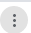
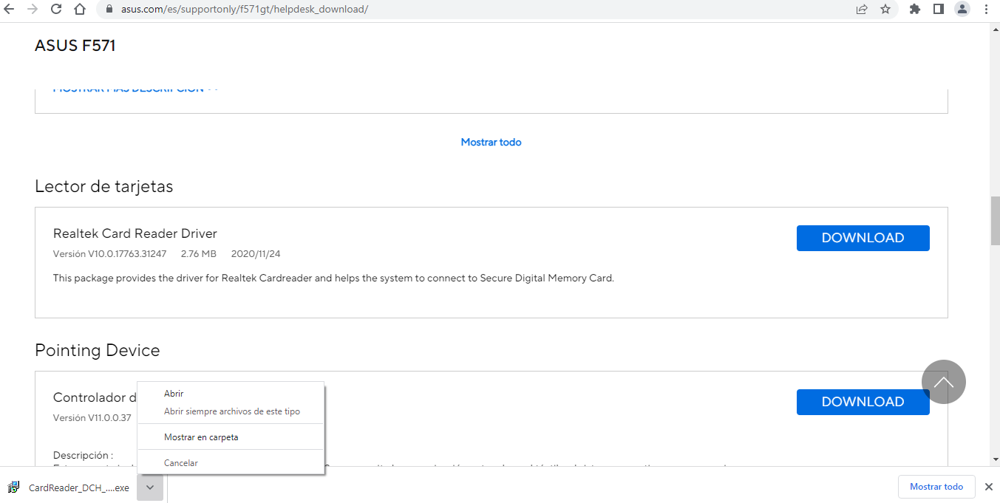

Google Chr me
me
Barra de direcciones
En esta barra escribimos la dirección de la página web que queremos visualizar. Funciona también como cuadro de búsqueda, solo tenemos que escribir una o varias palabras relacionadas con la página que queremos buscar. Al comenzar a escribir, nos aparecen más abajo una serie de sugerencias.
Pestañas
Nos permite tener abiertas varias páginas webs en una sola ventana. Al pulsar en una pestaña determinada, podremos visualizar la página web que contiene.
Panel lateral
Para acceder a él pulsamos el botónsituado en la esquina superior derecha. Aparece, entonces, un panel lateral en el que podremos guardar marcadores, páginas web que queremos leer después (lista de lectura) y los recorridos de búsquedas que hayamos realizado previamente.
Historial
Lista de páginas visitadas recientemente. Se accede a él con CRTL+H o desde el menú de configuración en la esquina superior derecha . En el historial, hay un cuadro de búsqueda que podemos usar para encontrar más rápidamente la página a la que accedimos anteriormente.
Marcadores
Añadiremos como marcadores (en otros navegadores se llaman favoritos) las páginas web que visitemos con frecuencia para disponer así de una manera más cómoda y rápida de acceder a ellas. Para ello, teniendo la página abierta, pulsamos el botón que aparece en la barra de direcciones. Podremos guardar la referencia en la carpeta Marcadores o en otra carpeta nueva que creemos. Al añadir a marcadores la página, automáticamente nos aparecerá debajo de la barra de direcciones un acceso rápido a la misma.
Descargas
Cuando en una web pulsamos para realizar la descarga de un archivo, la notificación de la descarga aparecerá en la esquina inferior izquierda de la ventana. Al pulsar en ella, nos aparecerá un menú con varias opciones (Mostrar en carpeta, Abrir...). El botón Mostrar todo sirve para ir a la ventana de gestión de descargas.

Modo incógnito
Se usa para navegar de forma privada sin que los demás usuarios de ese dispositivo vean tu actividad. Chrome NO almacenará la siguiente información:
- El historial de navegación
- Cookies y datos de sitios
- Información introducida en formularios
Sí se guardan las descargas, los marcadores y los elementos de la lista de lectura.
Añadir atajo
Sirve para añadir un acceso rápido a una página web.

Chrome Web Store
Tienda donde se ofrecen utilidades, extensiones y complementos para personalizar el navegador como deseemos.
Sincronización con otros dispositivos. Iniciar sesión
Podemos identificarnos en el navegador si tenemos una cuenta de Google. Ello nos permitirá acceder a las páginas favoritas, contraseñas guardadas, historial y configuraciones desde cualquier ordenador o dispositivo móvil con sistema operativo iOS o Android.
Gestionar extensiones
Las extensiones podría decirse que son elementos que se añaden al navegador que sirven para optimizar la navegación del usuario y proporcionarle nuevas funcionalidades. Conviene tener en cuenta que las extensiones pueden recopilar información del usuario, por lo que habrá que tenerlo en cuenta a la hora de instalar una extensión.